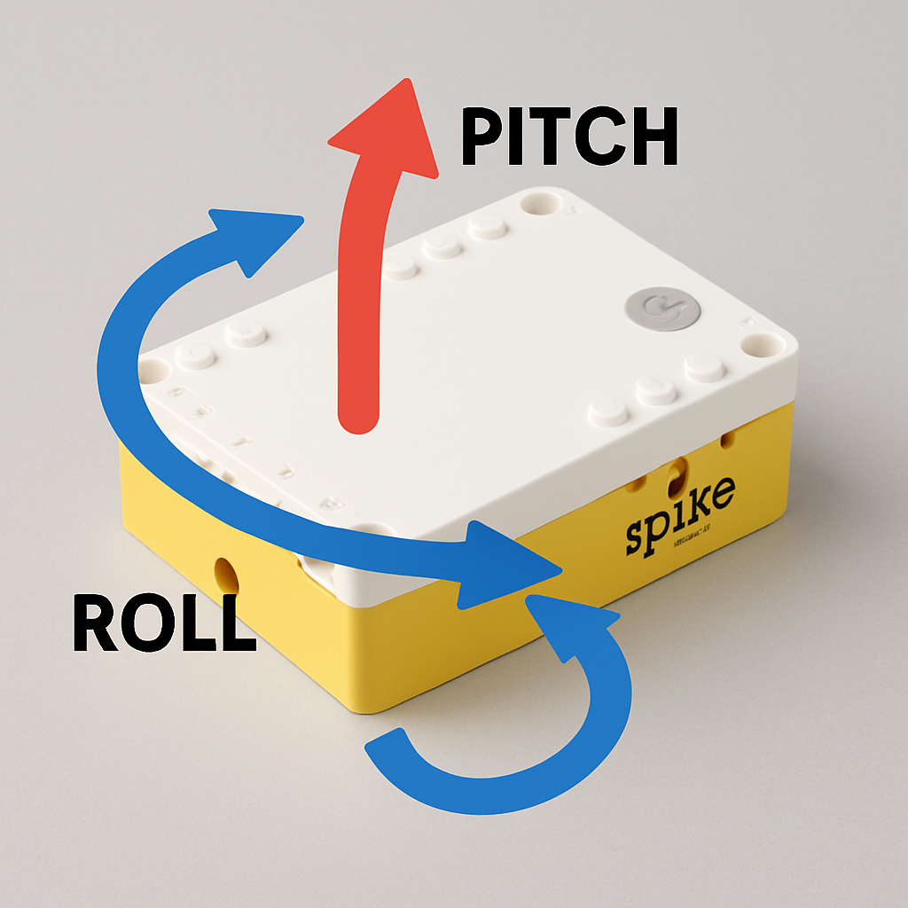

Sensor giróscopo
Vamos a utilizar el giróscopo interno del hub para estudiar su movimiento. Hay tres conceptos importantes que vamos a trabajar: el alabeo, el cabeceo y el guiñado.

Si inclinamos el hub según la dirección más larga del ladrillo lo denominaremos cabeceo (Pitch de la imagen), si lo inclinamos lateralmente, es el alabeo y si lo giramos es el guiñado (flecha Roll). Los dos primeros conceptos son útiles para nosotros para utilizar un ladrillo como mando de control por ejemplo. También podemos emplear el cabeceo para darle más o menos potencia a un motor en función de la pendiente que tiene que subir. Vamos a hacer algunos ejercicios que nos muestre en qué consiste.
Tareas 1 y 2. Un programa que si inclinamos el hub hacia delante según su eje longitudinal (eje largo) nos muestre en pantalla la flecha ->, si lo inclinamos hacia atras, flecha <-, y si lo volcamos hacia la derecha o izquierda nos muestre la correspondiente flecha de sentido.
Tarea 3. Comprendiendo el guiñado. Vamos a realizar un programa que reproduzca un sonido cuando giremos el hub 90º